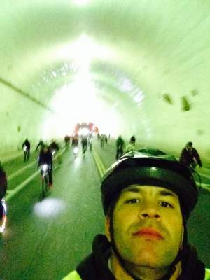

Welcome!
Hello, my name is Shaman and I am aspiring to learn more about Web Development among other things. My hobbies an interests include: riding bicycles, surfing, camping, hiking, fishing, creating website and making things. I also enjoy spending time with my little newphew. We have fun playing Mario Cart together, going to ammusment parks and riding bicycles.
"Life is like riding a bicycle, to keep your balance you must keep moving."
-Albert Einstein
